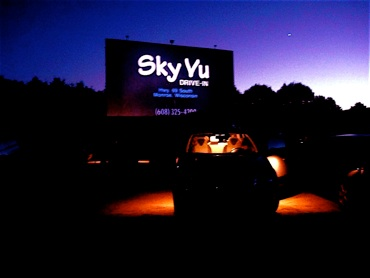

ADMISSONS & RULES
Admissions
Sky-Vu Drive-In shows two movies for the price of one!
Sky-Vu is only able to accept cash
Passes from the Goetz theatre are not redeemable at Sky-Vu
Refunds are available during the first twelve minutes of the first movie, and only the first show is guaranteed
Sky-Vu is wheel chair accessible and also has an ADA Bathroom
Sound is broadcast through the FM Stereo in your car
Thank you for your patronage and your positive response to the new addtions here at Sky-Vu Drive-In.
Rules

- Sky-vu is open during all weather
- Parking:
- Sky-Vu has two car wide stalls, parking close to the poles that mark the stalls will insure that two cars can fit comfortably.
- Chairs are only allowed to be placed in front of a parking spot not along side, because this will prevent other cars from parking
- Pets:
- Pets are not allowed at Sky-Vu, for the sake of others as well as your precious friend.
- There is a no carry-in policy at Sky-Vu